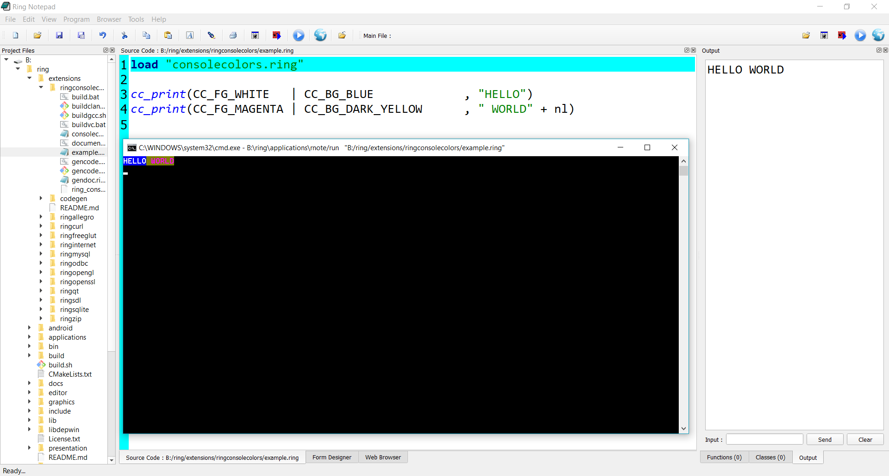
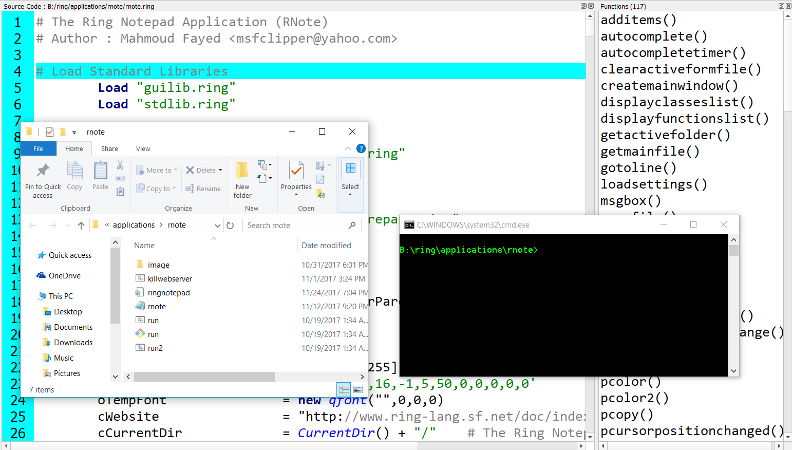

What is new in Ring 1.6?¶
In this chapter we will learn about the changes and new features in Ring 1.6 release.
List of changes and new features¶
Ring 1.6 comes with many new features!
Employee Application
New Tool: Ring2EXE
Better Ring For Android
New Tool : Folder2qrc
Better Scripts for building Ring
RingConsoleColors Extension
RingMurmurHash Extension
Better Ring Notepad
Better RingQt
Better StdLib
Better RingVM
Better RingREPL
Using Tab instead of char(9)
Using CR as Carriage return
Using the ! operator as not
Using && and || operators
Using ? to print expression then new line
Employee Application¶
The Employee application is added to ring/applications
Developer: Ahmed Hassouna

New Tool: Ring2EXE¶
In Ring 1.6 we have a nice tool called Ring2EXE (Written in Ring itself)
Using Ring2EXE we can distribute applications quickly for Windows, Linux, macOS and Mobile devices
Read the chapter “Distributing Ring Applications using Ring2EXE” for more information!
Better Ring For Android¶
Ring For Android (using RingQt) is updated to use the Ring Object File ( *.ringo ) instead of using many source code files ( *.ring )
The next screen shot is an example of building the cards game for Android
We are using cards.ringo instead of cards.ring
If you have large project (many *.ring files) it will use only one *.ringo file.

To prepare Qt project to distribute RingQt application for Mobile use Ring2EXE
Example
ring2exe cards.ring -dist -mobileqt
Example (2)
ring2exe formdesigner.ring -dist -mobileqt

New Tool: Folder2qrc¶
When we have large RingQt project that contains a lot of images and files, We need to add these files to the resource file ( *.qrc ) when distributing applications for Mobile devices.
Instead of adding these files one by one, Ring 1.6 comes with a simple tool that save our time, It’s called Folder2qrc.
Example:
folder2qrc formdesigner.ring
We determine the main source file while we are in the application folder, and Folder2qrc will check all of the files in the current folder and sub folders, Then add them to the resource file after the mainfile.ringo (In our example this will be formdesigner.ringo)
The output file will be : project.qrc
You can open it and remove the files that you don’t need in the resources!
Better Scripts for building Ring¶
Ring 1.6 comes with better scripts for building Ring from source code.
The updates are tested on 32bit and 64bit systems on Windows, Linux (Ubuntu,Fedora) and macOS.
The scripts for Windows are updated to find the Visual C/C++ compiler based on your Visual Studio version.
RingConsoleColors Extension¶
Using the RingConsoleColors extension we can easily change the colors used in our console applications
For more information check the RingConsoleColors chapter in the documentation.
RingMurmurHash Extension¶
Ring 1.6 comes with the RingMurmurHash extension!
Developer: Hassan Ahmed
Example:
load "murmurhashlib.ring"
key = "Ring Language"
see murmurhash3_x86_32(key, 0, 0) + nl // Output: 1894444853
see murmurhash3_x86_32(key, 0, 1) + nl // Output: 70eaef35
For more information check the RingMurmurHash chapter in the documentation.
Better Ring Notepad¶
Ring Notepad comes with the next updates
Automatic setting for the Main File when we Run the application (using the Main file buttons).
Main File - Automatic save before running.
When we run GUI application - don’t change the focus to the text box used for the input in the Output Window.
A button and option to run web applications

For Windows users, Ring 1.6 comes with Apache Web server!
We can run any web application from any folder directly without doing any configuration.

Tools - Operating System - Terminal (Command Prompt) & Files Manager (Explorer).

So we can quickly open the Command Prompt or the Explorer at the application folder.

Better RingQt¶
RingQt comes with the next updates
QAllEvents - getkeytext() Method
QSQLQuery - exec_2() Method
QDockWidget Events
AppFile() Function
IsMobile() Function
QRegion Class
QCoreApplication class
Better StdLib¶
StdLib comes with the next updates
Factors() function is updated (Return the output instead of printing it)
Palindrome() function is updated (Return the output instead of printing it)
Using stdlibcore.ring we can use the StdLib functions (Without Classes)
Also this is useful when developing standalone console applications
Because using stdlib.ring (functions & classes) will load libraries like RingLibCurl, RingOpenSSL, etc.
New Functions
SystemSilent(cCommand) Function : Execute system commands without displaying the output.
OSCreateOpenFolder(cFolder) : Create folder then change the current folder to this new folder
OSCopyFolder(cParentFolder,cFolderNameToCopy) : Copy folder to the current directory
OSDeleteFolder(cFolder) : Delete Folder
OSCopyFile(cFileName) : Copy File to the current directory
OSDeleteFile(cFileName) : Delete File
OSRenameFile(cOldFileName,cNewFileName) : Rename file
Better RingVM¶
RingVM comes with the next updates
Support using many getter methods in Expressions
Support using this & self in setter/getter/normal methods without calling setter/getter methods.
TempName() function is updated (Better Code)
ExeFileName() function is updated (Better Code)
Private Attributes - Support re-usage in the class region (After the keyword private)
Ring API : ring_scanner_runobjstring()
ring_state_setvar() function
Better RingREPL¶
RingREPL comes with the next updates
RingREPL will get command line parameters to determine the style.
Setting RingREPL Style based on Ring Notepad Style.
Using Tab instead of char(9)¶
The variable Tab is defined to be used instead of char(9)
Example (1):
see :one + nl + tab + :two + nl + tab + tab + :three
Output:
one
two
three
You can change the variable to another value
Example (2):
tab = " "
see :one + nl + tab + :two + nl + tab + tab + :three
Output:
one
two
three
Using CR as Carriage return¶
The next example count from 1 to 10 in the same line during 10 seconds
load "stdlibcore.ring"
for x = 1 to 10 see x sleep(1) see cr next
Using the ! operator as not¶
We have = and != in the Ring language
But for the logical operators we have and, or & not
Now we can use the ! operator as not
Example:
if ! false
see "True!" + nl
ok
Output
True!
Using && and || operators¶
In Ring we have the next keywords for the logical operations
and
or
not
Now we have also the next operators
&&
||
!
Example:
if one() and two()
see "Test1 - Fail" + nl
else
see "Test1 - Pass" + nl
ok
if two() or one()
see "Test2 - Pass" + nl
else
see "Test2 - Fail" + nl
ok
if one() && two()
see "Test3 - Fail" + nl
else
see "Test3 - Pass" + nl
ok
if two() || one()
see "Test4 - Pass" + nl
else
see "Test4 - Fail" + nl
ok
func one return True
func two return False
Output:
Test1 - Pass
Test2 - Pass
Test3 - Pass
Test4 - Pass
Using ? to print expression then new line¶
It’s common to print new line after printing an expression, We can use the ? operator to do that!
Example:
? "Hello, World!"
for x = 1 to 10
? x
next
Output:
Hello, World!
1
2
3
4
5
6
7
8
9
10